Equinox: Homecoming
Technical design
Quest implementation, reusable interactions, world streaming, and localization for a story-driven online adventure.
Read the design breakdownGameplay & Technical Designer
I love prototyping mechanics, balancing systems, and figuring out what makes a game loop fun. Usually with my sleeves rolled up, working directly in the engine.
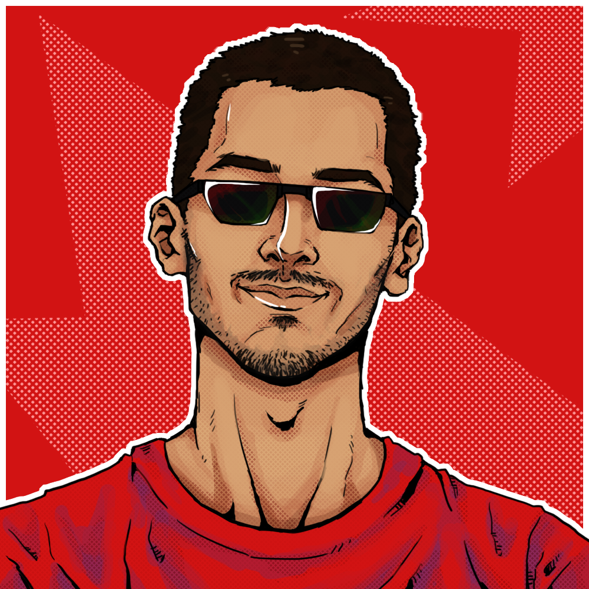
From Catania to Sweden.
Same curiosity. More layers.
The work, and the thinking behind it
What I built, why I built it,
and what changed along the way.
Technical design
Quest implementation, reusable interactions, world streaming, and localization for a story-driven online adventure.
Read the design breakdownTechnical · Gameplay · Systems
Replicated combat, artist-friendly tools, and a lobby you interact with by playing.
Read the design breakdownGameplay · Systems · 3C
Three rocket-powered attacks, enemy behaviors, and a lock-on system built around constant movement.
Read the design breakdownGameplay · Systems · Level design
A reverse-progression roguelite: abilities, encounters, and balance built around sacrifice.
Read the design breakdownGameplay · Systems · Level design
Flight, combat, and a room-sized adventure shaped by how players actually moved through it.
Read the design breakdownLead · Gameplay · Level design
An arena shooter scoped for six weeks: core mechanics, cathedral layouts, and escalating enemy waves.
Read the design breakdownGameplay · Systems · Level design
My first team project: platforming abilities, level blockouts, and a difficulty curve refined through playtesting.
Read the design breakdownHow I like to work
If there’s one thing I love, it’s turning ideas into reality. For me, that means getting a mechanic into the engine, putting it in front of players, and paying attention to what happens.
The person behind the projects ↗Blueprints, C++, C#, Unreal, Unity. I like being close to the implementation, where I can try an idea and see how it feels.
A rocket attack that stops the player. A room that’s too small for flight. Playtesting helps me find the gap between the experience I intended and the one players actually have.
Exposed parameters, reusable interactions, and tools artists can adjust themselves. Good technical design also means helping other people do their best work.
Unreal Engine · Blueprints · Unity · C# · C++ · Git · Perforce · Miro · Photoshop · Jira · Confluence
Ciao, I'm Claudio Scuderi, an Italian technical Game Designer that's currently working at Blue Scarab Entertainment in Stockholm.
My journey started in Catania, where I studied computer science at DMI
University.
This background gave me not only a solid
understanding of coding
languages such
as C++ and C# (Blueprints too), but also an almost permanent tan.
Beware the Etna, the largest active volcano in Europe.
I swear it is not scary but very cool!
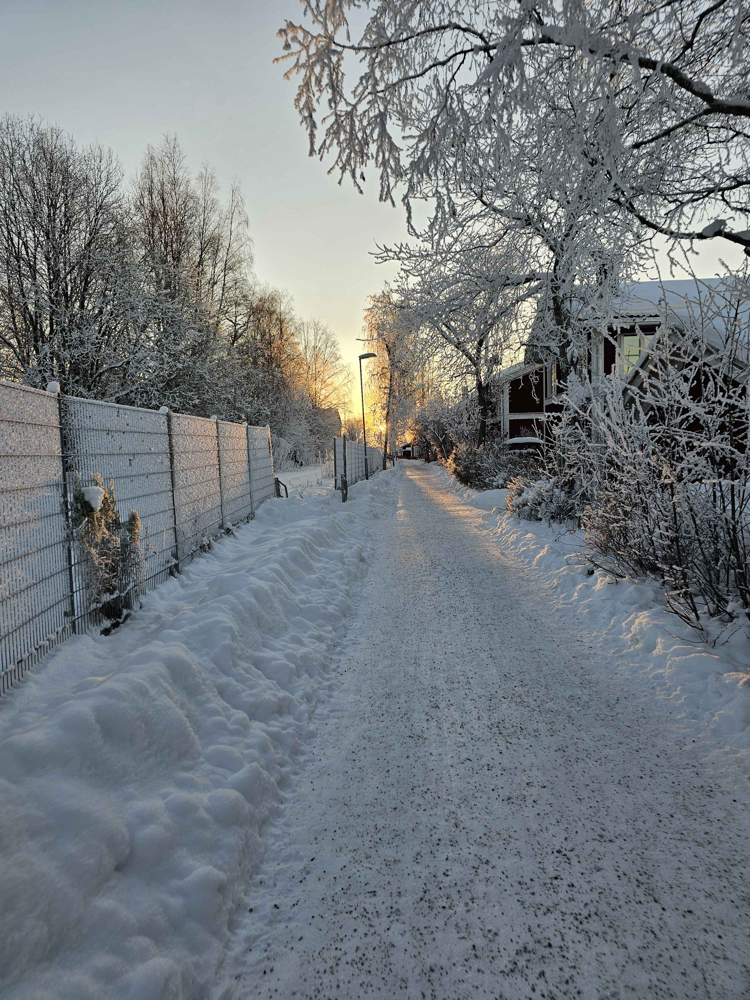
Afterward, my voyage led me first to Padua, Italy, and then to Falun in
Sweden.
It was there that I decided to shift my focus to game
design, studying at Event
Horizon School for three years,
where I learned the core skills to be a game designer, and then at
PlaygroundSquad to expand my knowledge and refine my skills.
It was a nice but abrupt change, moving from a +35°C weather to a -20°C.
Hey at least I got to experience Skiing for the first time!
Today, my passion for games is channeled into my work and personal
projects.
My curiosity drives me to try new things and
constantly challenges me to
grow.
Highly recommend Scuba diving to relax.
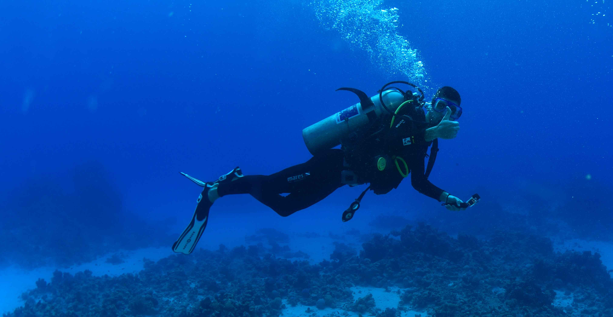
When making games, I like to focus on figuring out what makes the game loop fun and deep diving into the technical aspects. My approach involves a hands-on experience, spending a lot of my time working directly within the engine.
I make an effort to play and experience many titles, to always keep up to date, and whenever I can I like to try something unique. Next on the list is parachuting!
As a creative person, my goal is to recreate the experiences that made me fall in love with gaming, and create games that leave a lasting impression on players.
My favourite games are those that offer a challenging or competitive experience built on a solid gameplay foundation, while giving players the freedom to be creative and explore different approaches. Some of them are:
Noita
Elden Ring
Valheim
Into the Breach
League of Legends
Click image for a PDF
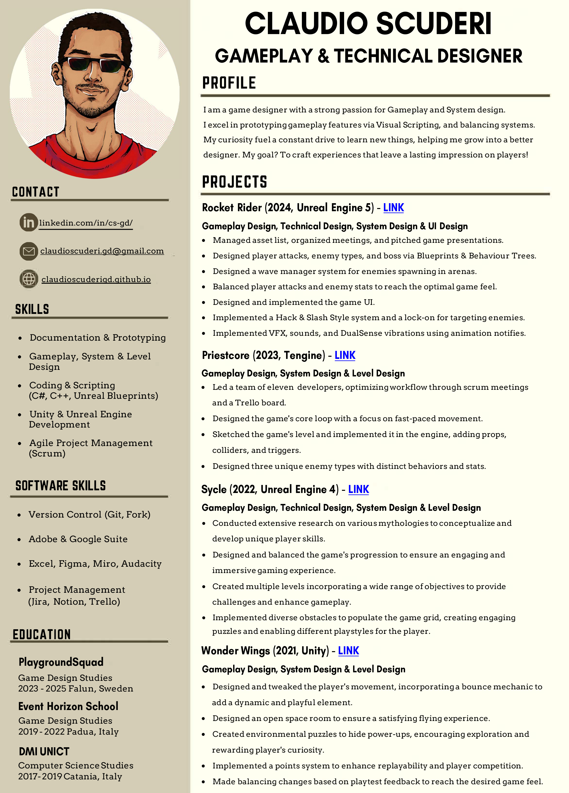
Blue Scarab Entertainment / Technical design
Bringing quests to life, one interaction at a time.
MMO · Live service · Unreal Engine 5 · Team of 35
Watch the trailerEquinox: Homecoming is a live-service MMO that brings together horse riding, cozy exploration, and a dark mystery.
Saddle up with friends and investigate a dark mystery, where each trail leads to wonder and intrigue. A string of events has set the idyllic island on edge. Discover the truth behind your mother’s disappearance and a local's sudden death. For fans of horses, murder mysteries, and cozy exploration!Technical & Gameplay Design:
Contributed to over 25 content updates.
Designed and implemented Quests using the company in-house tool.
Blueprinting for interactables, NPCs and quest objects.
Setting up items and currency descriptions, spawn points, rarity and placement in the world.
Level Streaming with Data Layer and World Partition Subsystem to optimize performances and loading times.
Localization pipeline setup and implementation to translate all game chapters.
Equinox: Homecoming launched in Early Access on May 8, 2025. We kept building on the game with monthly updates, adding new in-game chapters with quests and cinematics, alongside new horse breeds for players to discover. After these continuous updates, version 1.0 launched on March 5, 2026.
I worked on over 25 updates for Equinox, bringing new content into the game. This included implementing quests, setting up NPCs and their clothing, creating items and currencies, writing their in-game descriptions, and placing them throughout the world.
One of my main responsibilities on Equinox: Homecoming was working with the game's quest system.
I worked with the company's in-house quest tool to set up and implement quests within Unreal.
This involved taking the intended quest flow and translating it into a functional sequence of objectives, interactions and progression states.
A major part of this work was making sure that the quests correctly reacted to what the player was doing in the world.
Objectives needed to update at the appropriate time, interactions had to trigger the correct quest progression, and different parts of the quest
needed to remain consistent as the player explored the island.
Working closely with the artists and programmers, I helped turn the planned quest structures into playable experiences directly inside the engine.

A large part of my technical design work involved creating Blueprints for interactable assets and quest objects.
These Blueprints allowed objects in the world to communicate with the quest system and perform specific actions when interacted with.
This was particularly important for creating quests that were driven by the player's interactions with the environment rather than only through traditional UI elements.
I focused on making these objects reusable and easy to configure, allowing different quest objects to share common behaviours while still
exposing the variables needed for individual interactions.
I worked on setting up item and currency spawn points across the world, deciding what should spawn, where it should spawn, and how rare each reward should be.
A big part of this was making sure the placement made sense within the world.
Rewards needed to encourage players to explore without making them feel like they were everywhere.
This gave me the opportunity to experience the more systemic side of level design, where reward distribution,
world exploration, and player progression need to work together.
Equinox: Homecoming features large environments that require careful management of the content loaded at any given time.
I worked with Unreal Engine 5's Data Layer Subsystem to organize and control level content.
Data Layers allowed us to separate different versions and states of the world and control which content was active depending
on the current gameplay situation.
I used this system to help manage what was loaded and visible in different parts of the game, contributing to better performance
and loading times while keeping the levels manageable for the team.
A good example of this was when we added interiors to the buildings in the town. Having all of the interiors loaded at the same time caused a noticeable performance drop,
especially when the player was moving around the city.
To solve this, I set up a separate Data Layer for each building interior. Instead of keeping every interior loaded,
the relevant Data Layer would only be activated when the player got close to that building's entrance. Once the player moved away, the interior could be unloaded again.
This significantly reduced the amount of content being loaded around the town and improved performance while exploring the area.
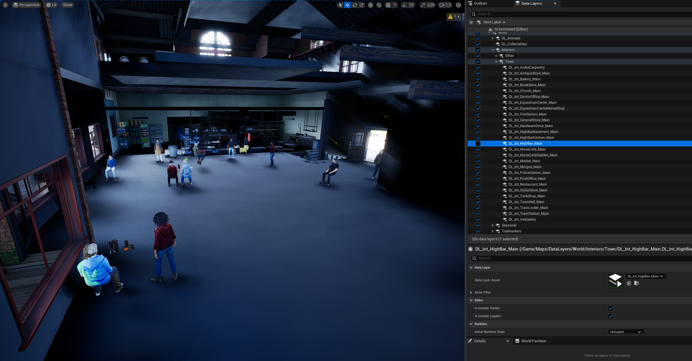
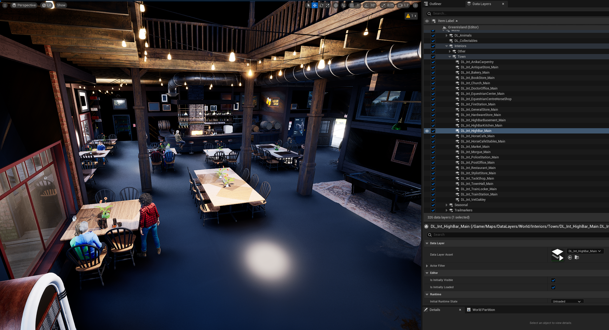
I worked on setting up and implementing the localization pipeline for over 150,000 words, with new text arriving every week as the game continued to receive updates. To put that into perspective, that’s approaching the length of The Fellowship of the Ring, at roughly 180,000 words.
At that scale, a consistent, repeatable workflow was essential. I integrated localization into our development process so translated content could be brought into each chapter across the different languages supported by the project, paying close attention to how text was structured and referenced so updates wouldn’t break quest progression or gameplay interactions.
The pipeline made the process more predictable for the team and reduced the manual work involved in adding and updating translations, helping us keep up with a game that kept growing.
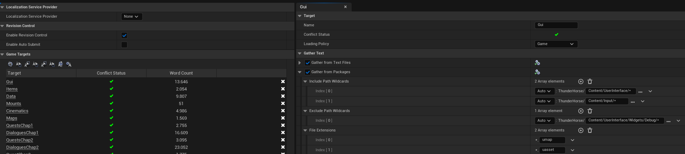
Technical · Gameplay · Systems / Unreal Engine 5
A multiplayer wizard duel, from combat to ready-up.
Team of 17 · 9 weeks
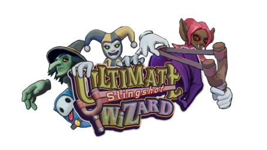
Technical & Gameplay Design:
Implemented the multiplayer replication for all mechanics.
Designed & implemented the players' combat using Blueprints.
Created tools for the art team for level dressing.
System Design:
Adapted player combat to simulate slingshots.
Improved player death feedback.
Balanced player stats such as movement speed, bullet damage, range, cooldown.
In this project, my main goal was to ensure that all gameplay mechanics, especially combat, functioned seamlessly in a multiplayer environment.
The first challenge of the project was to learn what Replication was and how it worked in Unreal. No one in the team had any experience with a multiplayer project, so we all started by watching tutorials and documentation regarding Unreal Replication. Once we knew enough regarding replicated variables and Remote Procedure Calls (RPCs), we started implementing our mechanics.
We began with a lot of trial and error, playtesting in a group to see whether the mechanics were correctly replicated across clients. Initially, it was a learning curve, but once we got the hang of it, the process became much more efficient. Using Blueprints for most of the gameplay mechanics also helped streamline replication, by simply enabling the Replicates checkbox in the class defaults, Unreal Engine handled much of the underlying work for us.
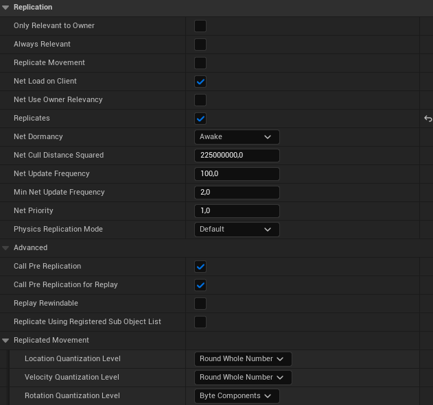
Using Blueprints, I implemented various tools focused on making my artists job
easier to dress up our levels.
I focused on making these system designer-friendly, or in
this case art-friendly, exposing variables and enabling other team members to easily tweak
behaviour or values without digging into complex systems.
The first tool was a random and non asset spawner, with customizable parameters like speed, direction, and rotation. We primarily used it to populate background clutter and add variety to our scenes.
The second tool was a magical floating effect Blueprint that made selected assets levitate and rotate gently. This gave the environment a more dynamic and enchanted feel. The parameters such as float distance and rotation speed were fully adjustable. I also used this tool to animate tutorial elements in the player lobby.
One of the more complex tools I built addressed a specific challenge in our player lobby. We wanted the lobby to feel like part of the game world, immersive and free of traditional UI, but still allow players to select their character and color. To achieve this, I implemented a sort of diegetic UI blueprint where players could shoot at magic mirrors and canvases to cycle through available options. This required tracking which player fired the shot, retrieving their current character and color indexes, and updating the correct array based on whether they hit the mirror or canvas.
Finally, to start the game without on-screen buttons, I also created a diegetic ready-up system. Players stand on gems embedded in the lobby floor to signal they are ready. Once all players are ready, a Blueprint spawns a black hole that pulls them into a portal, transitioning them into a random level.
In parallel with gameplay implementation, I worked on system balancing and tuning to ensure a fun multiplayer experience.
Balancing was an ongoing process that required a lot of playtesting and discussion within the team.
One of the core systems that went through significant evolution was the player shooting. In the early stages of development, charging an attack had no effect until the player held it for a fixed duration. This felt unresponsive and failed to reward precision. In response, we redesigned the mechanic: the longer a player charges a shot, the faster and farther the projectile travels. However, to introduce a tradeoff, charging now reduces the player’s movement speed by half, making them more vulnerable while aiming.
Another key area that I felt required improvement was the player death feedback. During playtests, eliminations often went unnoticed with all the chaos happening on screen. To address this, I coordinated with our artists to create a flashy visual effect, and I enhanced it with slow motion, camera shake, and a distinct audio cue. These changes made deaths more noticeable and impactful.
Gameplay · Systems · 3C / Unreal Engine 5
Combat that keeps moving. Literally.
Team of 17 · 9 weeks
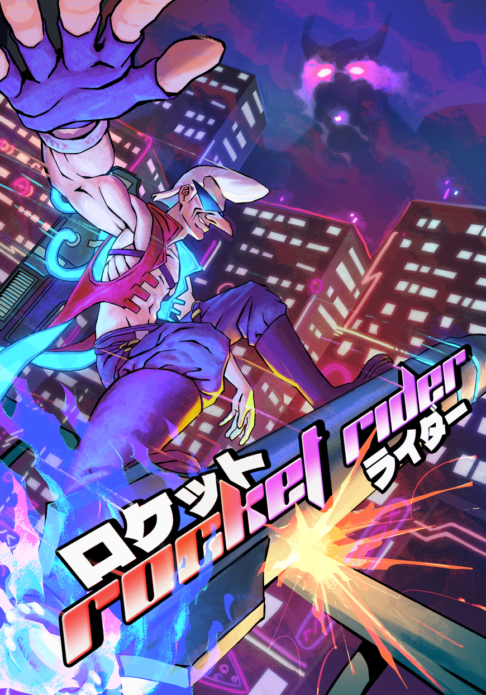
Combat Design:
Designed three unique player attacks.
Designed three enemy types and assisted in their implemententation using Unreal Behavior Trees.
Designed a lock-on system to direct player's attacks towards the closest enemy.
Implemented a Hack & Slash Style System that dynamically changes the game's music.
System Design:
Balanced player and enemy stats such as damage, range, knockback and cooldown.
Designed a wave manager to spawn enemies in arenas.
General Game Design:
Designed the game camera and controls.
Created an asset list, organized meetings, and pitched the game presentations.
Implemented UI, VFXs and sounds in game, using unreal blueprints, animation notifies and sound cues.
Implemented all the vibrations used for the haptics of the PS5 controller.
Created a bug list document to keep track of issues and fix them following their priority.
For the combat design, I started this task by researching and studying the enemy
design of my main references Hifi Rush and Devil May Cry 5.
The first challenge was how to design a fun, fast-paced combat while maintaining the identity of the
game,
meaning all combat would happen while riding a rocket.
So, I came up with three unique attacks that used the player's rocket in different
ways (Swirl, Slam, and
Barrage) and included a boost ability, used to
disengage enemies or perform platforming.
Then, to reach our intended experience, I decided on some key elements:
Constant Player Movement: The player's rocket is always in motion, forcing them to think and react quickly during combat. This continuous forward momentum keeps the gameplay fast-paced and maintain players engaged.
Animation Montages: Having only one animator, we used animation montages for attacks, to speed up production, as this approach eliminated the need for blending animations.
Attack Commitment: Attacks cannot be interrupted by other inputs, except movement, or the current animation montage would be disrupted. Started as a setback, but ended adding depth to the combat, rewarding strategic decision-making.
The light attack or Rocket Swirl is intended to be the main choice
through the game.
It executes quickly, causes little
damage, and can be chained into a three-hit
combo
when used in rapid succession. Each consecutive strike
within the combo deals bonus damage.
In the first iteration, the attack stopped the player's movement. However,
after playtesting, I reworked it
into a dashing attack that locks onto
the target. This adjustment not only complemented the game’s
fast-paced nature but
also added a strategic element, allowing players to use the attack for both
offense and repositioning.

The Rocket Slam takes longer to execute but
creates a powerful Area Of Effect (AOE) explosion,
dealing massive damage.
This design follows the risk-reward principle, requiring
precise timing for maximum payoff.
During playtesting, I observed that players mainly used this ability while
in combat. To balance its power,
I introduced a cooldown to it, ensuring that its use
remained strategic and didn't overshadow other combat mechanics.

The Rocket Barrage is a ranged attack and a resource sink. It consumes Scrap to shoot a burst of missiles from the player's back, the more Scrap spent the more the missiles. Although it deals low damage, it is useful for poking enemies and maintaining Style Points.

After the attacks were done, during playtests, I noticed some players
struggled to land hits with the Swirl
attack due to the constant forward movement of the
player's rocket.
To address this, I designed a lock-on
system that guides the player's attacks toward the nearest enemy or the center of the
camera.
The Barrage also relies on this system, and can only be executed when an
enemy is locked on.

Then, I implemented through Blueprints a visual widget to highlight the locked-on target, providing clear feedback to the player. This solution drastically improved the combat experience, making it more intuitive and accessible.
The blueprint checks if an enemy is inside the locking range. When they are, it renders the health bar and targeting widgets. As soon as the enemy is outside locking range it sets the visibility of the widgets as false.
Like many Hack & Slash, our game needed a Style System
to boost the player's excitement
as they landed consecutive hits on enemies without taking damage.
I designed multiple style levels, ranging from D to S and
culminating in R: RocketTastic.
Then, I created a custom event
that gets called every time the style level changes.
I used this event to play unique sounds and dynamically
amplify the game’s music
as players reached higher style levels.
Then I implemented the UI elements to display the
current style rank.
In a future iteration, I desire to multiply the resource
gains based on the style points obtained during combat, further
rewarding skillful play.
As the gameplay and system designer, I needed to be able to tweak
various key elements
such as damage values, speed, and so on.
Working with the programmers we developed various
components to quickly visualize and access the required
stats within the Engine.
These tools enabled me to tweak damage, hitbox size,
knockback, and so on, for each attack.
We applied the same approach to enemies so that I could easily balance their
health points, movement speed,
and other critical stats.
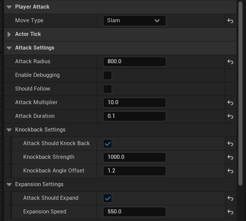
With our combo system, we had to find a visual way to tell when an attack animation
was done so we could kick off the next one.
Collaborating with my programmers, we designed a method to tweak
animation keyframes for different phases.
For instance, PlayerSwirl spawns the attack Hitbox, which
deals damage and limits player inputs to movement only,
while PlayerSwirlFinish disables damage, lets all inputs
back in and creates a time window to continue the combo.
I also took advantage of animation notifies to add sounds and VFX at the right
keyframes for each animation.

During the project, I dived into Unreal Engine 5's AI framework (AI Controller, Behavior Tree, and Blackboard) to help the programmers prototype and implementing the AI. After consulting the programmers, I created three enemy types, one being a boss enemy, and used flowcharts to communicate their behaviors to the team. Furthermore, I was in charge of implementing all the VFXs and sounds for each enemy.
The first enemy, Goro, is a slow but powerful melee unit
with moderate health.
It delivers heavy, slow punches and will constantly attempt to close the
distance to engage the player in close combat.
If the player is too far away or unreachable, Goro will perform a Jump attack to quickly cover ground and strike.
Moreover, considering the game's setting, I wanted to
emphasize the enemies' cooperation,
as from a narrative point of view, they are both part of the enforcers
controlling the city.
For instance, Goros will guard and protect the second
enemy type, the Beedrone, while it charges its attack,
highlighting their role as a unified force in maintaining order.
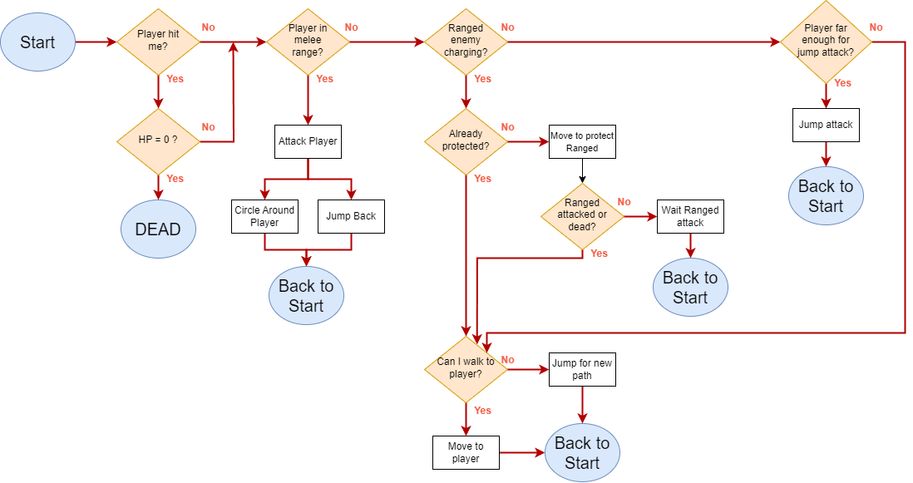
The Beedrone is a swift but fragile ranged enemy whose primary role is to fire at the player, forcing them to stay mobile. Its attacks are designed to keep the player on their toes, reinforcing the game’s emphasis on constant movement.
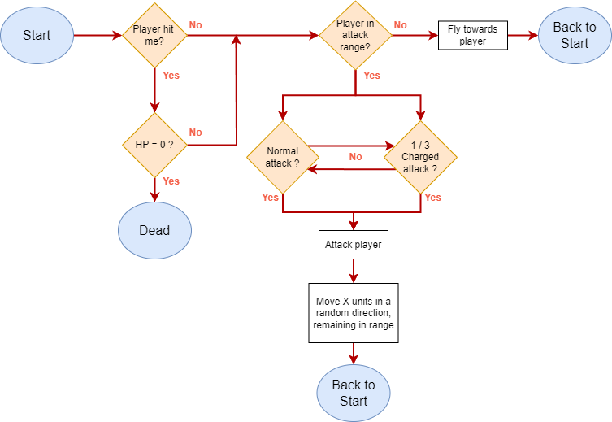
For the game’s boss fight, the team designed a variety of attacks for the
boss to use.
Once the programmers implemented these attacks, my role was to build the boss phases using Unreal Behavior
Trees.
Using my custom nodes, I adjusted the number, speed, and
timing between attacks to establish a rhythmic flow to the fight.
After each phase, I introduced new attacks and reduced the dodge window to progressively
increase the difficulty and challenge the player.
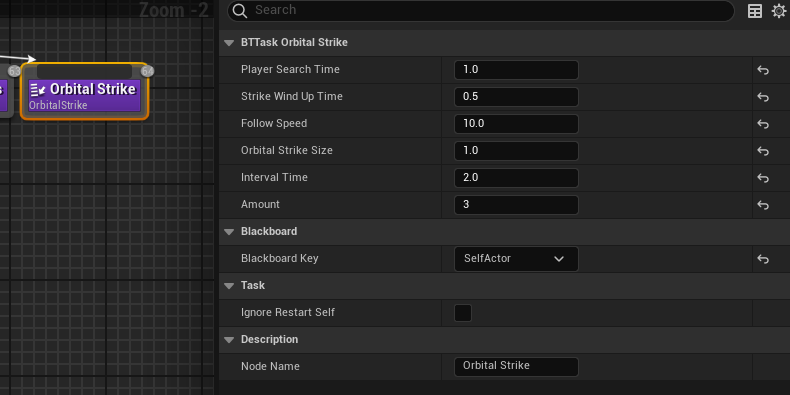
Designing the movement for this game was a big challenge, as we did not have
a clear direction or reference at the start of the project.
The Overrider demo came out during the development, which was an optimal
reference for some aspects.
Given the premise of riding a rocket and engaging
multiple enemies, I opted for an automatic forward
movement
with a high movement speed and the use of a lerp for
rotation to avoid quick turns, simulating a more realistic rocket
maneuver.
After that, I needed to consider what would happen if the player´s rocket was destroyed,
so I added a basic movement for the character
when grounded.
During playtesting, the team realized that being grounded and simply waiting
for the rocket to respawn was tedious.
To address this, we experimented with various solutions, such as providing
the player additional mechanics while grounded, like using stun grenades or
engaging in
precise platforming.
However, we ultimately decided to eliminate ground
movement, as it slowed the game's pacing too much.
Our focus was on maintaining a fast-paced
rocket-riding
experience.

For the camera, I took inspiration from Devil May Cry 5 and Hi-Fi Rush, making key design choices that significantly influenced the gameplay experience:
Close Third-Person Perspective: Opting for a close third-person view immerses the player in the game world while maintaining clear visibility of the surrounding environment around the character.
Dynamic Camera: The camera adapts fluidly to the player's movement. When the player is in motion, it pulls back slightly, providing a broader field of view and better spatial awareness. When the player stops, the camera moves in closer, heightening the sensation of speed and intensity during high-action moments.
Independent Rotation: Players can rotate the camera freely with input controls, allowing them to move in one direction while looking in another. This offers great flexibility in combat and exploration.

I mapped the light attack, Rocket Swirl, to the right trigger and
Square, following the conventions of many hack-and-slash games.
Lock-on was assigned to the left trigger, while movement boost was placed on
both bumpers for quick and intuitive access.
Special attacks were triggered using Triangle and Circle, while X served as
the standard jump button.
I implemented dynamic vibration feedback on the
controller, varying the intensity and pattern based on the player's actions.
Each attack, boost, and railgrind triggers a unique vibration response,
providing tactile feedback to the player.
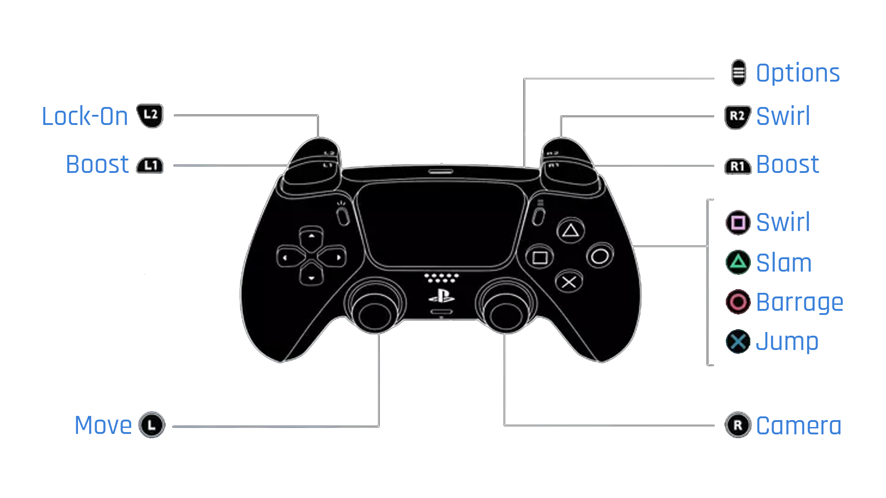
Gameplay · Systems · Level design / Unreal Engine 4
What if progression meant giving something up?
Team of 20 · 9 weeks
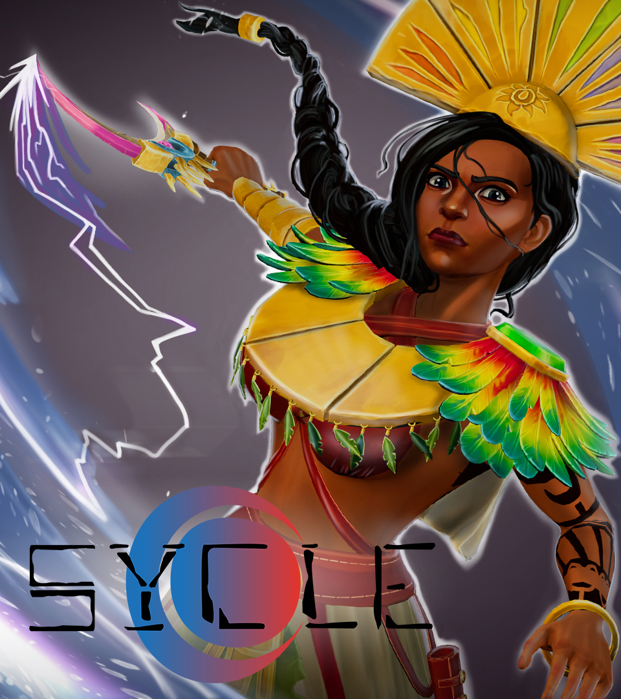
Gameplay Design:
Designed the
player´s abilities, Damage over
time(DOTs) and status effects.
Moreover, introduced environmental obstacles, enhancing strategic depth.
Level Design:
Created multiple levels with diverse objectives, ensuring a balanced
mix of combat, teaching mechanics, and puzzle-solving.
System Design:
Responsible for the
balance of the reverse
progression system and gameplay elements.
Conducted extensive playtesting, identifying and addressing bugs, and fine-tuning
mechanics for an
optimal player experience.
At the start of the project, I was entrusted with the making of the player´s abilities.
I started by designing Itzel's abilities, focusing on her role as the Goddess of
Change.
To ensure both narrative and mechanical cohesion, I
researched mythologies and their
related gods from various cultures, including Mesopotamian, Incan, and African
influences.
After my research was done, I also thought of the core
elements our character would need in a strategy game where we control
a single unit.
I ended with four different abilities, each having a distinct
effect and use case:
Earthquake: Provides Survivability to the player. Deals damage and pushes enemies away from the player, also offering protection from ranged attacks. Its main purpose is not just to harm enemies, but to buy the player time. Inspired by Pachamama, the Inca fertility goddess.
Meteor Fall: Able to clear multiple enemies in one sweep and destroy obstacles to create new paths. Short-range ability that deals massive damage, burns enemies, and destroys environmental objects. Inspired by Ishtar, the ancient Mesopotamian goddess of love, war, and fertility.

Tornado: Gives the opportunity for Strategic displacement. Low-damage attack that can push enemies into obstacles, causing further damage. Allows players to make use of the environment to their advantage, promoting creative gameplay. Inspired by Hadad, the Mesopotamian storm god.

Holy Smite: Offers a Ranged Debuff. Long-range ability that damages enemies, lowers their defense, and ignores obstacles as it strikes like lightning from the sky. I created this ability to give players a long-range option, allowing them to debuff enemies from afar before they close in. Inspired by Inanna, the goddess of fertility and justice.

After the abilities were done I needed to design various obstacles to add
another layer of strategy,
and fill the game grid with something other than walls to give a reason to the player to interact with
the environment.
Since my
programmers already coded damage-over-time effects for
the player's
abilities,
I decided to build upon them and add new effects with similar behaviors, so that
I could implement and modify them myself.
I ended up creating over 10 different obstacles with distinctive status effects, like pointy walls that apply bleed, breakable columns that stun, terrains that slow movement or enhance elements, boulders that could be pushed and knock enemies aside.
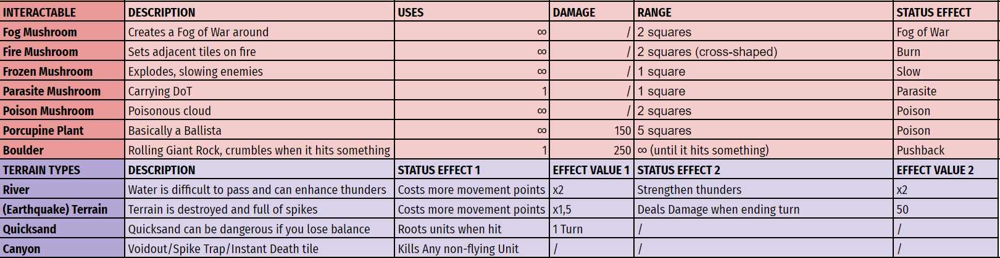
Once the core abilities and enemies were finalized, I turned to designing levels.
Drawing inspiration from games like XCOM and Warhammer Mechanicus, I studied their design, to create levels that catered to our game's unique mechanics. Unlike those games, which focus on multiple units, our game revolves around controlling a single character, so I had to be mindful of enemy placements, movement ranges, and terrain layout.
After I knew my constraints and goals, I drafted various levels, each with a specific purpose:
Tutorial Levels: Focused on introducing new mechanics or interactions, and teaching them to the player in a relatively safe environment.
Combat Levels: Stages full of enemies, forcing the player to fight. Here I focused on having non-linear levels to give the opportunity to the player to choose different routes and playstyles.
Puzzle Levels: Featuring environmental challenges that needs to be solved to proceed, like activating different altars to unlock the level exit, all while evading enemy patrols.
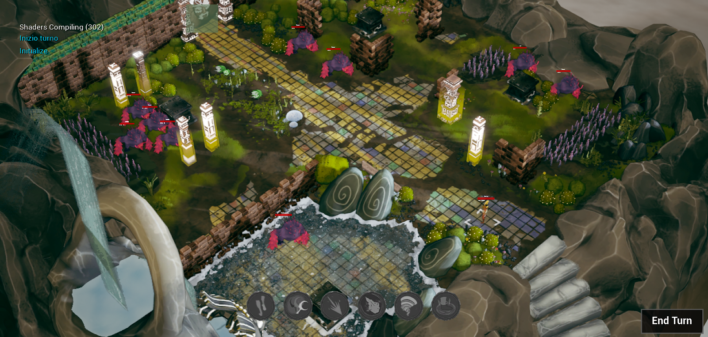
Balancing the reverse progression system was crucial,
as the player grows weaker
throughout the game.
After playtesting, we made several adjustments to fine-tune this system.
Initially, abilities were tied
to Action Points (AP),
but we switched to Health Points (HP) to better
reflect the theme of sacrifice.
This change introduced new challenges,
like managing HP effectively while using abilities.
To mitigate the risk of using too much HP, I introduced a healing mechanic: players could regain health by killing
enemies with melee attacks.
I also worked closely with the programmers to tweak the
stats of both players and enemies, ensuring the right balance of
challenge
and empowerment as the game progressed.
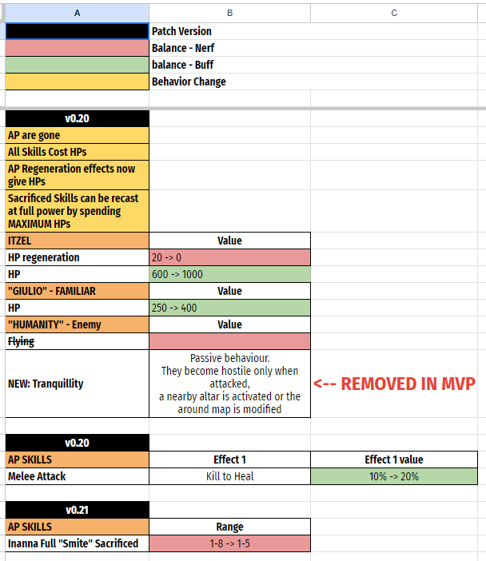
This project has been an important lesson. It was my and most of the group's first game in Unreal Engine, and we ended up overscoping a bit too much. Even so, we learned a lot about the engine, and my contributions to the project were wide-spanning and focused a lot on both the team and my individual work. I had the chance to focus on what I want to specialize in, that being Gameplay and System design. Moreover, I ended up having to take a lot of responsibility for the game, which I did not mind, and step in to help wherever we were struggling in the process. Our scope might have been too big for Sycle, resulting in a small demo rather than the complete game we desired, but it was a fun experience and a good lesson for the future.
Gameplay · Systems · Level design / Unity
A toy-sized adventure with room to fly.
Team of 12 · 9 weeks
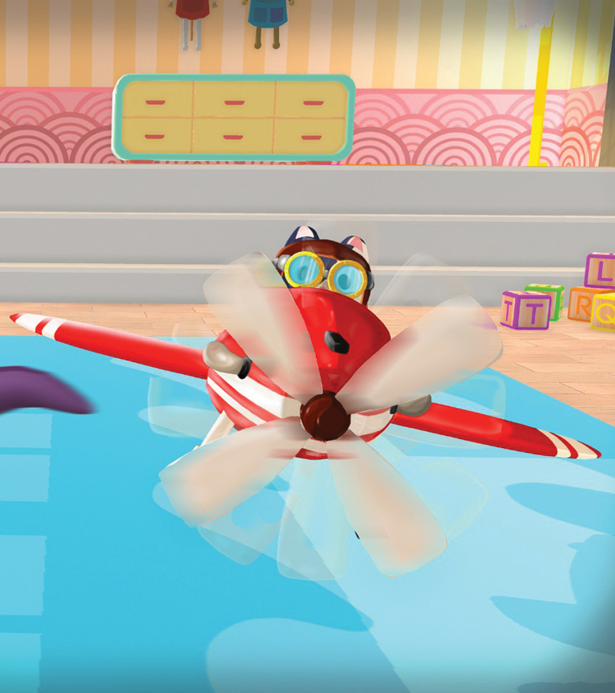
Gameplay Design:
Crafted player movement
and shooting mechanics, along with the design of four distinct enemy types.
Level Design:
Designed an open space
room for a satisfying flying experience, incorporated puzzles with hidden rewards,
and strategically positioned enemies with varied movement patterns.
System Design:
Responsible for the
balancing of player and enemy stats, including those of the boss character.
I took care of the majority of the gameplay-related mechanics for this project.
At the time I was playing the early access version of Everspace 2, so I had an optimal reference for what should have been our space shooter, but as we adapted our concept to our constraints we used toys instead of spaceships.
Consequently, the environment went through some changes, it would not be outer space but the inside of a house. For this reason, I also took inspiration from games such as TOY STORY 2: Buzz Lightyear to the Rescue and Airfix Dogfighter, as they were set in a very similar setting.
The game core loop revolves around exploring rooms within a house, searching for power-ups and secrets, battling malevolent toys, and ultimately facing off against each room's boss.
Movement was one of our core mechanics, and we wanted it to be intuitive and easy to control, so even a younger audience could play without problems.
I started by giving the toy plane a permanent forward movement, so that our players would have only to steer and worry about the direction rather than their speed. After that, I added a rotation mechanic to the plane, using the Q or E keys, would make our plane rotate to the left or the right, with the camera following said rotation, giving the chance to the player to perform stunts to evade enemy projectiles or explore parts of the level too tight to be entered while in a horizontal position.
Following I noticed how our collisions were not the best when the player hit a wall, as the plane would slide and tremble on the hit wall. To solve the issue I designed a bouncing mechanic, that bounced back the player's plane in the opposite direction from where they hit the wall, which shortly after, got implemented with its animation.

Moreover, after various playtests, I noticed how the automatic forward movement was an issue for some players when they tried to make precise maneuvers, so later on, I introduced a speed up and slow down mechanic for our plane, giving more control to the players that desired it.
While designing the movement of our player, I was also keeping in mind our second core mechanic, that being the shooting of our player but also of the game's enemies.
For the player, I decided to have two distinct shooting modes, one with a high rate of fire and a low damage output, and the second one being a powerful attack characterized by a slow rate of fire, that zoomed our camera in to take aim and unleash a magical rocket.
Each shooting type had its projectile lifetime, speed, reload time, and magazine size. When the shooting of the player was done, I and another designer, started working on the enemies.
We wanted to have a good variety of enemy types and behaviours, so we designed 4 different types of enemies, each with its own strenght and weaknesses, and they are:
Ground Stationary: The Bigtopus, our game's boss, is a stationary ground unit that spawns after all enemies are defeated. Though it can’t move, its high health and powerful melee and ranged attacks make it a formidable opponent, compensating for its vulnerability as an easy target.
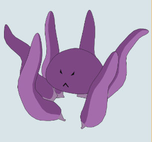
Ground Mobile: Unicorns are the most common ground enemies, patrolling set paths until the player comes within range. They then chase and fire sparkly projectiles. There are small unicorns with low health and larger, tougher "mama" unicorns. Their attacks are low damage but fire rapidly like a laser, making them dangerous if left unchecked.
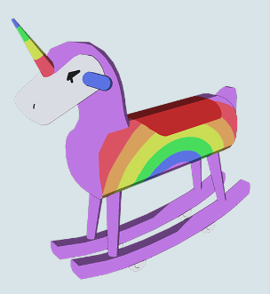
Elevated Stationary: Sharkmeids are stationary enemies placed on elevated surfaces like desks or tables. They fire a fast light beam from their tridents when the player enters range. While their rate of fire is slow, their projectile speed and damage make them deadly.
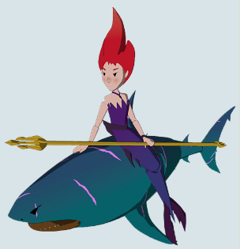
Flying Stationary: Teru Teru Bozu are flying enemies suspended by ropes from the ceiling. They shoot expanding projectiles that form damaging bubbles after a few seconds. While they have a limited range and can’t move, their unique attack makes them a serious threat within their area.
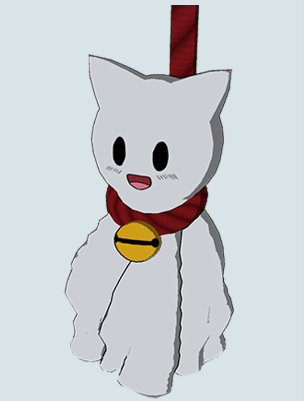
After the core mechanics were ready, it was time to design how to communicate all those actions to the player.
I started with a Health bar for both the player and the enemies, showing their current health. After that, I added visual cues for player damage such as a red outline on the screen, and successively an animation, to communicate it as clearly as possible.
Following that, I also wanted to prevent spam shooting in our game, so I designed an overheat system that disabled the player´s shooting if they fired too many bullets in a short amount of time.
To convey that without adding an ammo counter, I added a red bar, inside the crosshair to be specific, that was slightly filled every time the player shot a bullet, and emptied if they did not shoot for a few seconds.

The game was supposed to have 5 different rooms for our players to explore, but our vertical slice only had 1 room to show our gameplay. Even so, during playtest we observed how some of our players wanted to compete with each other, trying to complete the level in the fastest way possible. Analyzing that, I decided to add a score system, that gives points to the player on each enemy defeated depending on a multiplier based on playtime.
This mechanic, gave a visual way for our players to discover who would have the highest score, moreover, it created retention, improving our replay value, as players would try to improve their score.
For this project I worked closely with the art department to create our game level. We wanted to have a believable space, so, before creating mockups or blockouts, each member of the team sent photos of rooms as references.
I started analyzing them to see where the furnishings were placed, which were the recurrent items, and how large our environment should be. After having a rough idea, I created the level blockout in engine.
As soon as we started playtesting our movement in the scene, we noticed that if the player moved in a straight direction, they would traverse the entirety of the room in less than 10 seconds, and that was an issue.

I and the rest of the team liked the movement speed of our character, so the only choice was to make the level bigger. I started looking at references of mansions´ rooms, to then create a new blockout that was 3 times larger when compared to our old level.
Then, I divided the new level into 7 different areas, each offering a somewhat unique experience, from safe zones to environmental mazes hiding power-ups and increased enemy encounters. The goal was to provide meaning and pacing in different parts of the room, contributing to an engaging gameplay experience.
Moreover, while placing the enemies in the scene, I set the route of all the moving ones using a point to point movement system, and created various spawn points for them, to have kind of different runs everytime the player decided to run the game. Here there are some examples of the level areas with a description of their features:
The desk is a large section featuring sharkmeids and many patrolling enemies on the ground near it. It is a dangerous area having the highest amount of enemies per square meter, but it is worth the risk, as inside the desk, behind an environmental maze the strongest powerup lies in wait.
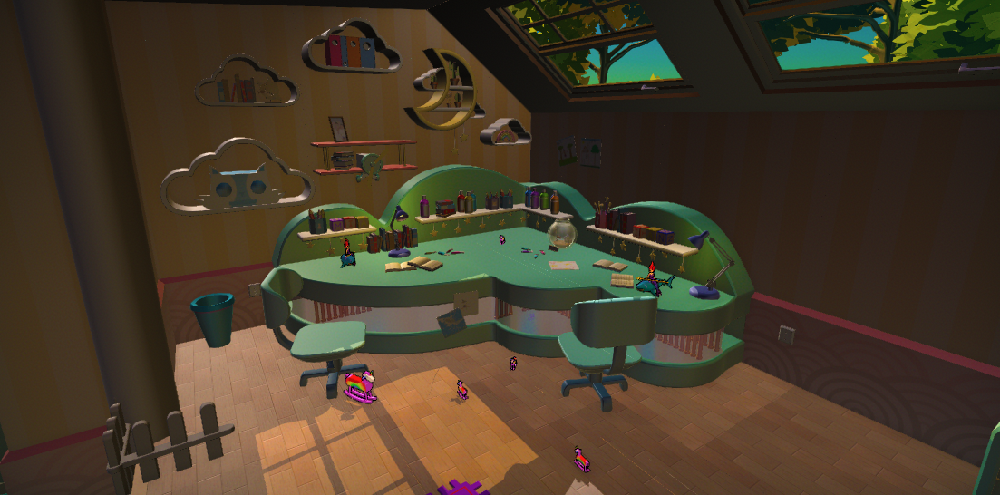
The wardrobe is a small area located to the right of the desk. It is a relatively safe area as there are only two enemies. This part of the level let players relax and rewards the ones that explore every nook and cranny of the level, as there are two hidden power-ups, one behind the boots inside the wardrobe and the other inside the basketball hoop.
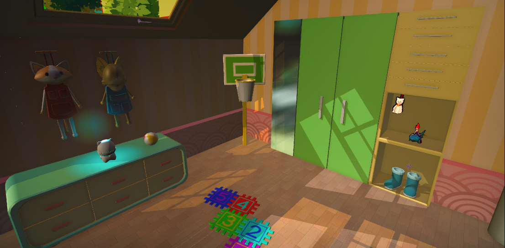
The window area, located on the left of the desk, hosts multiple types of enemies and shows in clear sight the shield power-up, which offers a strong buff to the player´s defense but it is risky to approach without clearing the enemies around it.
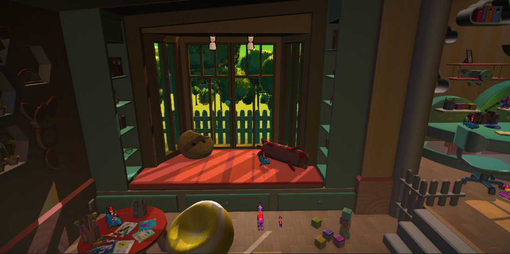
In this last picture we can see the Bunk Bed and our aesthetic final result with the shaders and lighting.
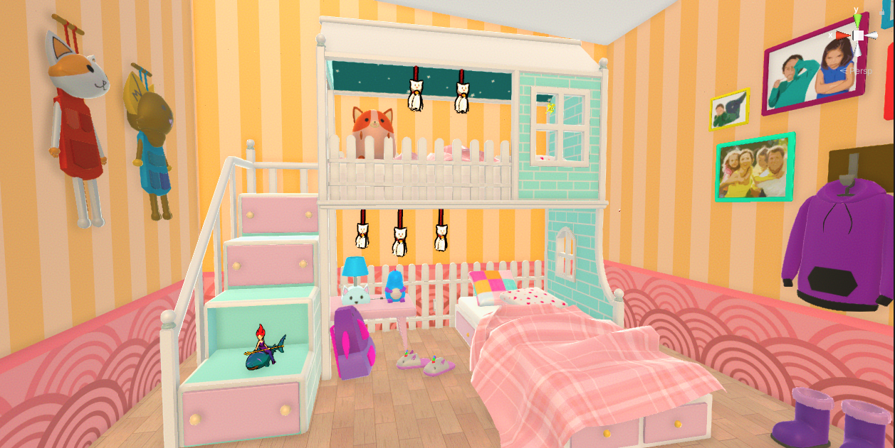
Throughout this nine-week project, I had the privilege of wearing many hats and contributing to various aspects of our game. Having to step in and help wherever we faced difficulties, I am grateful for the many opportunities to learn and contribute in meaningful ways.
Wonder Wings represents a project that I am particularly proud of at this moment in my game design journey, not just for the tasks I accomplished but more so for the successful result of our teamwork and the rewarding journey we navigated together.
Lead · Gameplay · Level design / Tengine
A cathedral, a horde of demons, and six weeks.
Team of 11 · 6 weeks
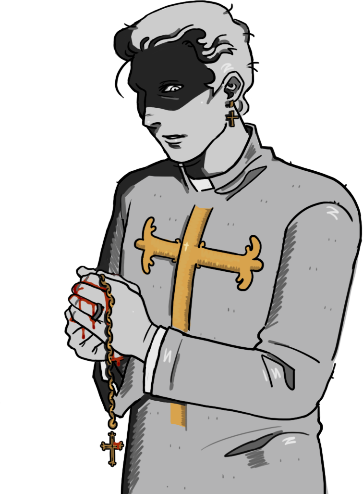
Lead Designer:
Game vision,
meetings,
decision-making and presentations, as well as scrum master.
Gameplay Design:
Responsible of
designing the game´s core mechanics, and the enemies behaviour.
Level Design:
Designed the game level,
whiteboxed it in engine, and added all the colliders and triggers required.
System Design:
Balanced the enemies
stats and the power-ups scaling. Moreover, designed a wave system to spawn enemies, that
increases periodically.
The project began with a blank canvas and the excitement of possibility. I was entrusted with the responsibility of designing the game from scratch and writing the Game Design Document (GDD). Though I had the final say on our decisions, the team had a lot of interesting and exciting ideas for features, mechanics, animations, and more. Everyone had suggestions and was involved in shaping the game.
In this project we wanted the player to experience the power and tension that comes from playing a fast-paced shooter, where they always have to be on the move and obliterate an infinite amount of enemies. Our gameplay was very inspired by games like Doom and Ultrakill.

We wanted enemy variety, but we chose to have only two enemy types for time constraints as we were developing the game in an almost barebone engine, and our programmers had a lot to focus on.
These enemies were: a small Imp demon that would chase the player and die with a few projectiles, its strenght being in its speed and numbers; and a bigger unit called the Hog, that would shoot the player when they enter its range, but in exchange of its attack range and large quantity of health points, it was a rarer and much slower unit.
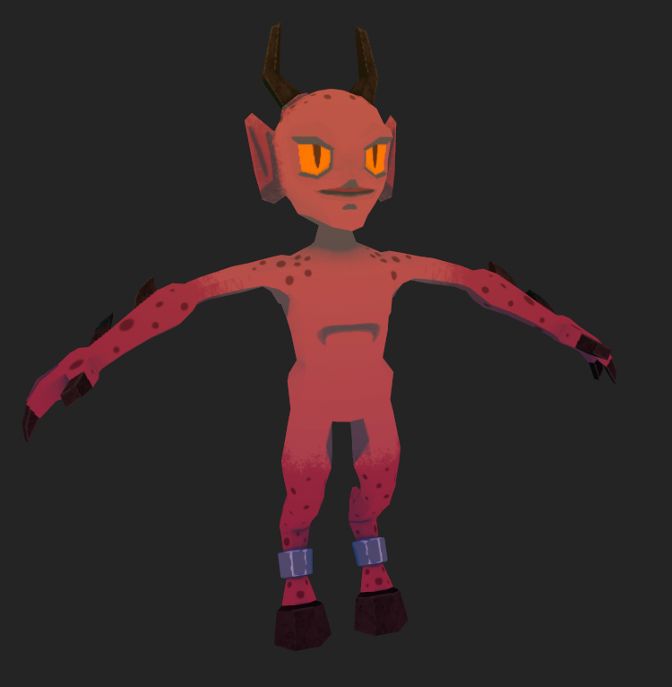
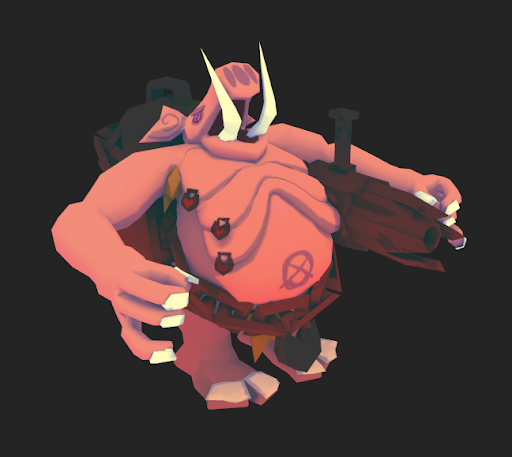
Moreover, I designed the movement and shooting mechanic of our player. For the movement, the goal was to make the player feel light on their feet while moving around, for that I designed a fast movement speed with a low gravity on the player, and a dash mechanic to dodge enemy projectiles or quickly reposition on the map.
Regarding the shooting, we did not have enough time to develop different guns, so I focused on giving the player an automatic weapon with flat damage no matter the distance, as they would be fighting infinite waves of enemies, and I felt that was the best choice to support the fast-pace feeling of our game and have a good playtime, as the player could continuously shoot enemies from far away if they kept moving.
If they ever stopped they would get drowned by the amount of incoming enemies.
Before focusing on our game level I expanded the game setting to have a coherent space. Our final setting was very similar to the Castlevania TV series, basically waves of demons were pillaging the Earth and attacking any people or religious building.
The player would play as a priest protecting his cathedral and for this reason, the game level resembled a real cathedral. In fact, before working on the actual level, I researched the architecture of many cathedrals (I was lucky enough to have visited many of them in Italy), the key elements that most if not all of them shared, like benches, pillars or the altars, and I also noticed how most of the buildings also shared the same cross shape.
After collecting enough info I and the other designer started working on some level mockups in Unreal for a faster workflow. My goal for the level was to have a large space around the pillars for the player to run around, and an altar area where our power-ups would spawn.
After completing our mockups, we compared them to see the strong and weak aspects of both, and for the final product we decided to mix our game levels into one to utilize the strenghts of both. For example, I wanted to add some kind of siderooms in my level as it was very rectangular shaped and the experience inside it felt kinda monotonous. To solve this, inspired by my colleague´s level, I added into mine a second floor that drastically improved the gameplay.
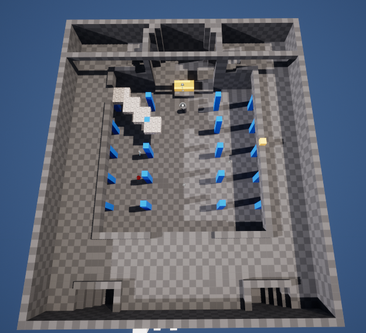
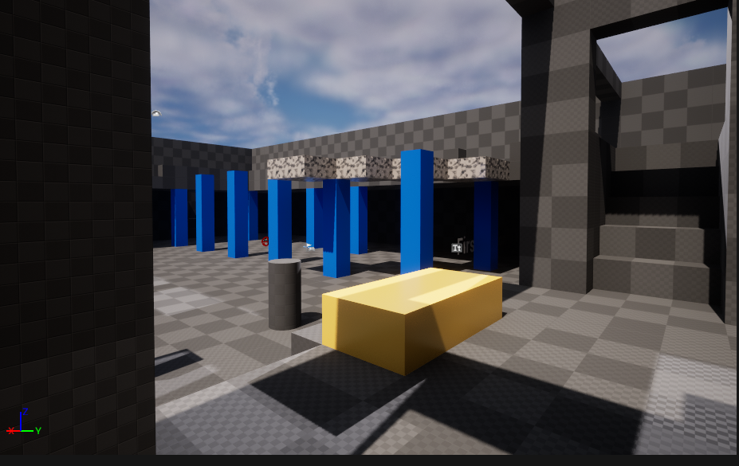
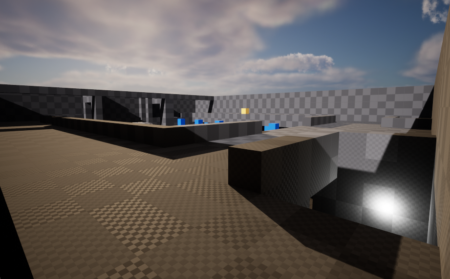
After that, I noticed how the enemies could block the entrances to the second floor if there were too many. To solve this, I introduced new pathways to reach the upper floor, adding a total of five different routes.
Now that I had a level, I needed some kind of obstacles or props to fill the empty space, and knowing that the game was set in an Apocalypse, I talked with our artists to break existing assets in our level, making the level feel affected by the changes in the game world. This resulted in using broken pillars or benches as obstacles.
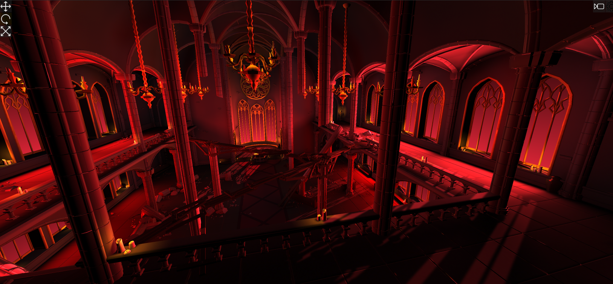
Knowing our game concept, I knew we needed some kind of progression to let the player continue their gaming session. For that I designed a wave system that used a Power Level that would gradually grow over time to know how many enemies to spawn, and to increase the game difficulty as time went on. Enemies and their variations would also have a power level, so that the wave system could pick randomly between them to create diverse waves during different runs.
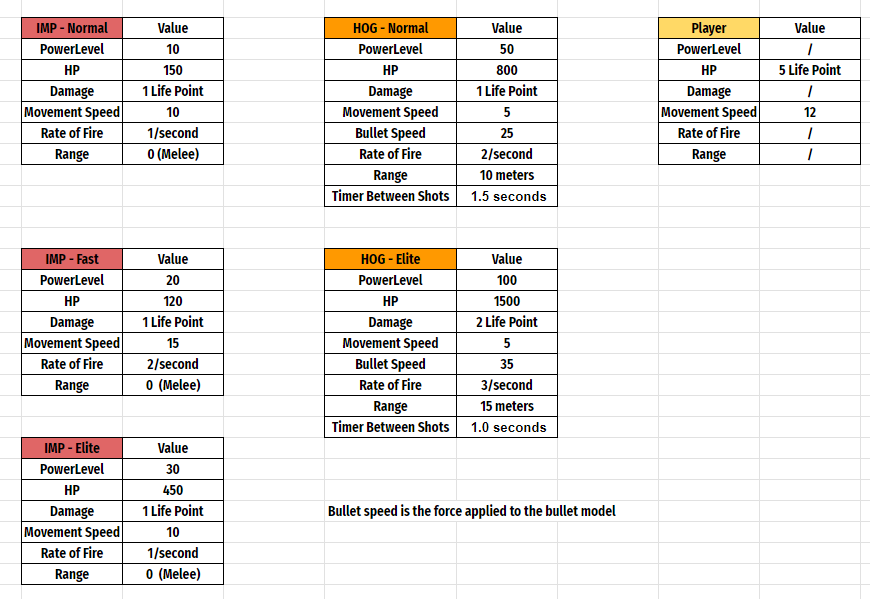
Other than that I also needed something that increased the player's strenghts over time. I chose to create various power-ups that could be obtained at the end of a wave, that buffed the player damage, reload time, health, spell cooldown and so on.
Last but not least, I playtested for many hours to obtain the desired feeling for our fast-paced-shooter, modifying enemies health, speed and range.
All in all, it was a good experience to learn how challenging it can be to work with a new tool such as a different Engine. We had to adapt our game to our constraints and look for creative solutions to obtain good performance and mechanics. I had the opportunity to be the Project Lead and take a lot of responsibility for the game, stepping in to help wherever we were struggling in the process.
Gameplay · Systems · Level design / Unreal Engine 4
Learning to give players a fair challenge.
Early team project
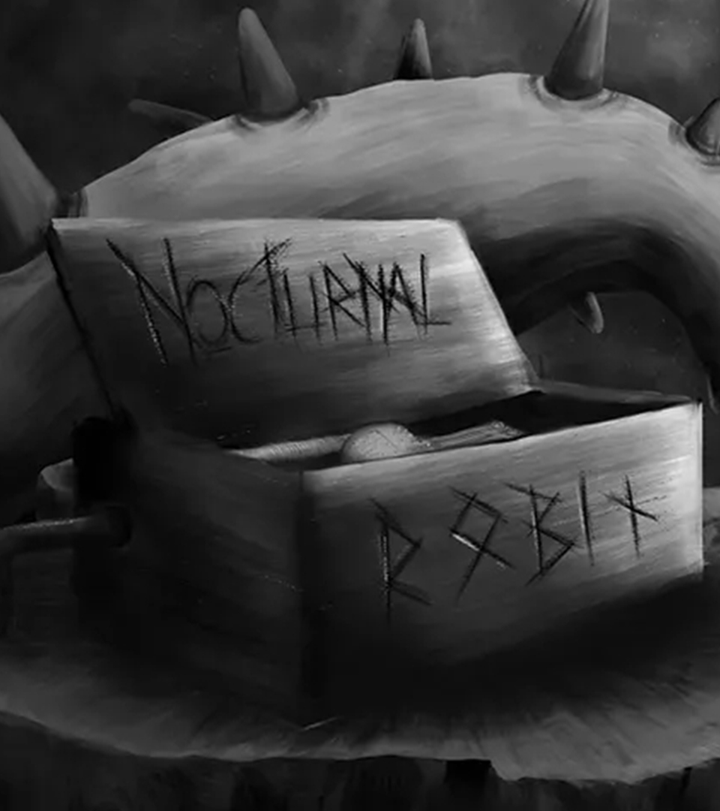
Gameplay Design:
Designed the player's
abilities and oversaw the design of the game camera to complement the platforming
experience.
Level Design:
Designed and whiteboxed
the level with a variety of different obstacles.
System Design:
Adjusted player stats to
align with the game level. Defined the range and timing parameters for moving obstacles,
and introduced a beat chart to map the difficulty curve, aiding in identifying and
addressing challenges during playtesting.
In the early stages, the group decided on making a 2D platformer where abilities acts as keys to specific challenges. As the person in charge of designing these abilities, knowing we lacked animators for this project, I designed simple mechanics that would not require distinctive animations. The finalized abilities included a double jump, a shrinking ability for tight spaces to evade traps, and a phantom creation feature to unlock doors.
As my first level design experience, I started by observing references of Trial & Error platformers such as Limbo and Toby the Secret Mine, and I was also slightly inspired by Hollow Knight´s white palace, as I was playing it at the time.
After analyzing those games, I created a legend of assets that I would need for our level. Knowing our game would be set in a dark forest, these included spiky vines, swinging trunks, moving platforms, and moving snail as our enemies.
With that ready I started sketching possible platforming challenges that utilized one or a mix of our abilities. When I had a couple dozen of those sketches, I created a mockup of a possible game level and successively whiteboxed it in the engine.
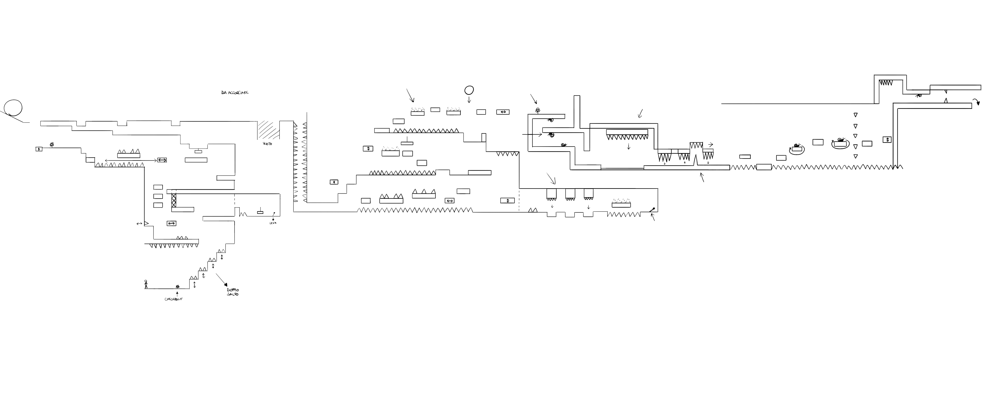
As soon as our abilities were ready, the group started to playtest the level, and here I noticed how the majority of the playtesters struggled to surpass some sections. After collecting feedback, I ended up reworking the level, introducing a tutorial for each ability at the start of the game, lowering the difficulty curve in some areas, and making the jump sections more intuitive.
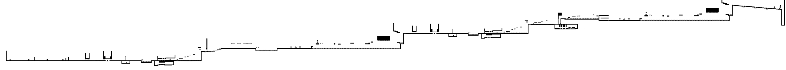
After the level was ready, I tweaked the player´s speed and jump height to fit to the game level. I also set the range and timer for the moving platforms, spikes, and trunks.
Moreover, as said before, in the game's first playtest the level was too hard for the majority of the players. As a solution, I reworked the level, but to prepare for future playtests I also created a beat chart to map the difficulty curve in each section of the level as a graph.
This graph would let me know if I would have to rework other obstacles in certain areas or add safe zones to break the pacing of the level and let players relax for a short while.
Nocturnal stands as a significant milestone in my game design journey, marking my initiation into group projects. It was both a rewarding and challenging experience, offering valuable lessons, for example the importance of adapting a concept to fit the needs or constraints of the group, to obtain the best possible result.